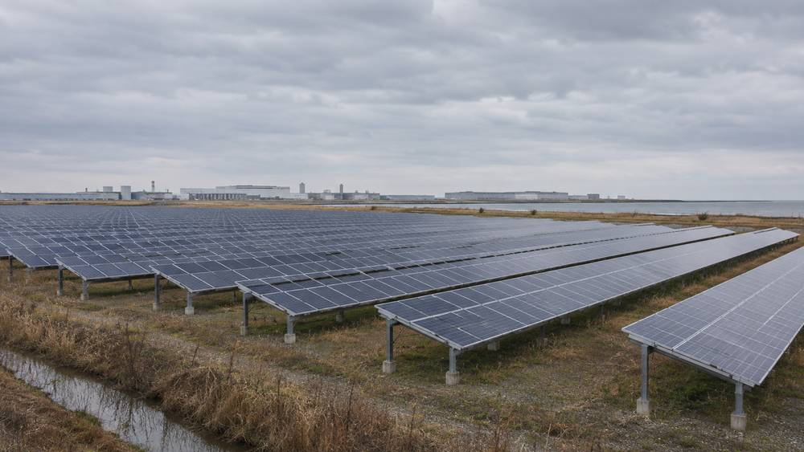

새만금 RE100 태양광 30MW 세 번째 사업자 공모

새만금개발공사가 11월 30일 하루 제안서를 받는다. 공사가 특수목적법인 지분을 최대 29.9%까지 갖고, 전기는 입주기업에 직접 PPA로 판다.
새만금개발공사가 새만금 스마트그린 국가시범산업단지 입주기업에 재생에너지를 대 줄 육상태양광 30MW 사업자를 세 번째로 모집한다. 제안서는 11월 30일 오전 9시부터 오후 4시까지 군산 공사 1층 세미나실에서 방문 접수로만 받는다. 공사는 13일 앞선 재공모에 1개 컨소시엄만 제안서를 내 유찰됐다고 공지했고, 19일 다시 공고를 냈다.
사업 부지는 군산시 오식도동 인근 공유수면 약 44만8,390㎡(약 13만5,000평)이고, 한국전력 내초변전소에 계통을 잇는다. 운영 기간은 상업운전 시작일부터 20년이며, 개시 시점은 제안자가 스스로 정해 낸다. 사업자 잘못으로 이 날짜를 넘기면 하루에 총투자비의 0.05%를 지체상금으로 내고, 상한은 총투자비의 10%다.
사업자는 협약 뒤 30일 안에 특수목적법인(SPC)을 세우고, 공사는 이 법인 주식의 최대 29.9%를 출자할 수 있다. 최대 출자자 몫은 50%를 넘을 수 없고, 사업자는 운영이 끝날 때까지 총투자비의 20%를 자기자본으로 유지해야 한다. 컨소시엄은 공급사업자와 최근 10년 안 400억 원 이상 프로젝트파이낸싱 실적사, 3MW 이상 준공 실적 시공사를 모두 갖춰야 한다.
전기는 산단 입주기업이나 입주 예정기업과 직접전력거래계약을 먼저 맺어 팔고, 거래단가는 공급단가의 105% 안에서 정한다. 산단 안에 살 기업이 없으면 공사 승인을 받아 산단 밖 법인과 1년 단위로 계약할 수 있다. 100점 만점 평가에서 MW당 총투자비와 총매출액이 각 20점, 지역업체 시공 참여비율이 7점이다. 새만금에서는 군산시가 100% 출자한 군산시민발전주식회사가 육상태양광 100MW를 2021년 12월부터 돌리고 있다. 서면 질의는 23일 오후 2시까지 받고, 제안서 평가는 12월 9일로 잡혀 있다.
시민에너지 관점
공유수면 13만5,000평에 30MW를 20년 돌리는 사업인데, 평가표 100점 가운데 주민·시민 참여를 따지는 항목은 하나도 없다. 같은 새만금의 군산시민발전 육상태양광은 사업비의 4%인 50억7,000만 원을 인근 주민 지원 몫으로 묶어 반년마다 나눠 왔다. 재공모까지 유찰된 지금이 공사 지분 29.9% 안에 지역 주민과 시민 출자 몫을 넣을 기회다. 새만금개발공사와 군산시는 다음 공모 조건에 주민 참여 배점을 넣고, 전북 시민은 그 요구를 공사에 직접 전하자.
출처: 새만금개발공사 2026-11-19 고시/공고 「새만금 스마트그린 국가시범산업단지 재생에너지 공급 선도사업 사업자 모집 3차 재공고」(붙임 공고문·공모지침서) 원문 보기
출처: 새만금개발공사 2026-11-13 고시/공고 「재생에너지 공급 선도사업 사업자 재공모 사업제안서 접수 결과」(붙임) 원문 보기
출처: 군산시민발전주식회사 2026-11-21 누리집 사업안내 「육상태양광사업」 원문 보기